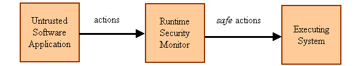

Runtime-policy-enforcement Project
Overview
The runtime-policy-enforcement project investigates the theory and practice of monitoring software to enforce security and privacy policies at runtime. We study models of enforcement mechanisms that operate at runtime, so we can improve our understanding of those mechanisms' capabilities and limitations. We also design languages and systems for specifying and enforcing runtime-security policies.
Contributors
Billy Rickey
Publications
A Theory of Gray Security Policies. Donald Ray and Jay Ligatti. Proceedings of the European Symposium on Research in Computer Security (ESORICS), September 2015. [BibTeX]
Modeling Runtime Enforcement with Mandatory Results Automata. Egor Dolzhenko, Jay Ligatti, and Srikar Reddy. International Journal of Information Security, Vol 14, No 1, pp 47-60. Springer, February 2015. (preliminary version) [BibTeX]
Enforcing More with Less: Formalizing Target-aware Run-time Monitors. Yannis Mallios, Lujo Bauer, Dilsun Kaynar, and Jay Ligatti. Proceedings of the International Workshop on Security and Trust Management (STM), September 2012. [BibTeX]
A Location-based Policy-specification Language for Mobile Devices. Joshua Finnis, Nalin Saigal, Adriana Iamnitchi, and Jay Ligatti. Pervasive and Mobile Computing Journal. In Press. Local version. [BibTeX]
A Theory of Runtime Enforcement, with Results. Jay Ligatti and Srikar Reddy. Proceedings of the European Symposium on Research in Computer Security (ESORICS), September 2010. [BibTeX]
A Theory of Runtime Enforcement, with Results. Jay Ligatti and Srikar Reddy. Technical Report USF-CSE-SS-102809, University of South Florida, October 2009, revised June 2010. [BibTeX]
LoPSiL: A
Location-based Policy-specification Language. Jay Ligatti, Billy Rickey,
and Nalin Saigal. Proceedings of the International ICST Conference on
Security and Privacy in Mobile Information and Communication Systems (MobiSec),
June 2009. [BibTeX]
Download
LopsilAndroid.zip An implementation of LoPSiL, a location-based policy-specification language. This zip file contains both the standard and the Android versions of LoPSiL.
Acknowledgement
This material is based upon work supported by the National Science Foundation under Grants CNS-0716343, CNS-0716216, CNS-0831785, and CNS-0742736. Any opinions, findings and conclusions or recomendations expressed in this material are those of the author(s) and do not necessarily reflect the views of the National Science Foundation (NSF).